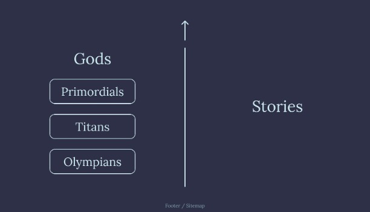
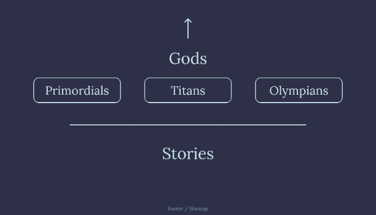
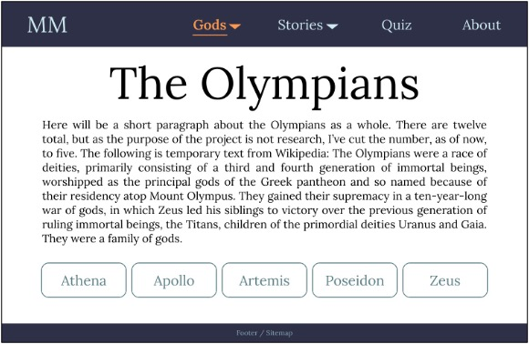
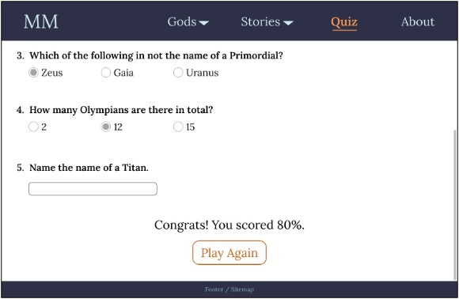

Mini Myths
Goal
Based on the given brief: To build a website using JavaScript, HTML, and CSS.
My idea: To create a website about Greek/Roman Mythology that incorporates interactive elements while still considering accessibility.
My idea: To create a website about Greek/Roman Mythology that incorporates interactive elements while still considering accessibility.
Tools
Figma, JavaScript, HTML, CSS, Replit
Prototype
This project was for my Web Design and Development module.
The first step was to choose a topic and make a simple
prototype of some key screens.
I chose to use Figma for this step.
As this site is mostly informational, I went with a simple blue color scheme and kept the design minimal to make all information easy to find, read, and navigate between.
Below are some example screens from my prototype.




Accessibility
While I wanted to make this website more dynamic, I also wanted to make sure it met accessibility standards.
I used the WebAIM contrast checker to make sure my colors contrasted enough
and made sure all content on the site was responsive to different screen sizes (this was done using Flexbox).
A footer was added to every content page that plainly displayed links to all pages to assist with navigation, especially via screen reader, and to act as an overview of the content.
My large focus was on making sure the user could toggle any motion on and off; this was done using JavaScript cookies so the user's selection could extend across pages.
The Final Site
The focus of this project was not on the content of the site itself, but on the design and implementation (interactive elements, clean code with comments, etc.).
For example, to make the Quiz feature even more interactive, a JSON file with a list of quiz questions and answers was included.
By randomly selecting questions from that list, users could play the quiz multiple times before it would start to feel repetitive.
This also makes it easier to add new questions in the future if I wanted to expand this website.
While we were not allowed to use any libraries such as React.js, I was able to explore building a website with Flexbox as its base. (Because of this, I reformatted my entire personal website to be more responsive using this tool.)
The source code has been moved from Replit to Github. You can also view a demo video of the entire website below.
While we were not allowed to use any libraries such as React.js, I was able to explore building a website with Flexbox as its base. (Because of this, I reformatted my entire personal website to be more responsive using this tool.)
The source code has been moved from Replit to Github. You can also view a demo video of the entire website below.